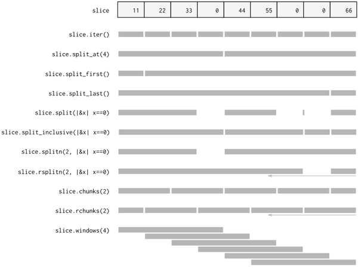
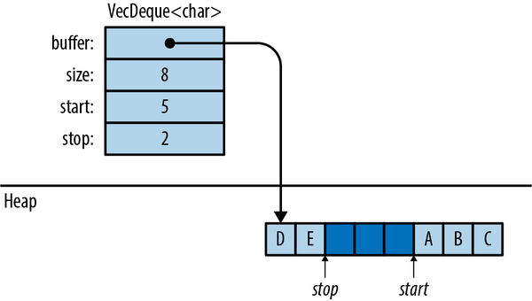
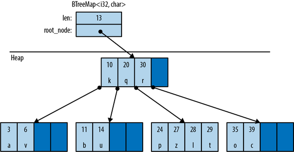

第十六章 收藏品
我们都像麦克斯韦的恶魔一样行事。生物会进行组织与分类。在日常生活的经验中，有着这样的原因：两个世纪以来，那些清醒的物理学家依然保持着这种卡通式的幻想。我们整理信件、建造沙堡、解答拼图谜题、区分小麦和糠秕、重新安排棋盘上的棋子、收集邮票、对书籍进行排序、创造对称性、创作十四行诗和奏鸣曲……所有这些行为，只要我们运用智慧来操作，就不会需要消耗太多的能量。
詹姆斯·格莱克，《信息：历史、理论、洪水》
Rust 标准库中包含多个集合类型，这些集合类型用于在内存中存储数据。在本书中，我们已经使用了诸如 Vec 和 HashMap 这样的集合类型。在本章中，我们将详细介绍这两种集合类型的方法，以及其他大约六种标准集合类型。在开始之前，让我们先了解一下 Rust 的集合类型与其他语言中的集合类型之间的几个系统性差异。
首先，移动和借用在 Rust 中非常常见。Rust 使用移动操作来避免值的深度复制。这就是为什么方法 Vec<T>::push(item) 的参数是以值形式传递的，而不是以引用形式传递。该值会被移动到向量中。第 4 章中的图表展示了这一机制的实际情况：将 Rust 中的 String 对象推送到 Vec<String> 对象中非常快速，因为 Rust 不需要复制字符串的字符数据，而且字符串的所有权始终保持清晰。
其次，Rust 没有无效性错误——比如那种由于集合的大小调整或结构变化而导致指针失效的情况。这类错误是 C++中导致未定义行为的常见原因，即使是在内存安全语言中，偶尔也会发生这种情况。而 Rust 的借用检查机制在编译阶段就能排除这类错误。
除了这些差异之外，Rust 的集合机制也符合预期。如果你是一个急需完成工作的经验丰富的程序员，你可以快速浏览这些内容，但千万不要错过“条目”部分。
概述
表 16-1 列出了 Rust 中存在的八种标准集合类型。所有这些类型都是通用类型。
| 收藏品 | 描述 | 类似的收集类型在……中 | ||
|---|---|---|---|---|
| C++ | Java | Python | ||
Vec<T> |
可扩展的数组 | vector |
ArrayList |
list |
VecDeque<T> |
双端队列 （可扩展的环形缓冲区） |
deque |
ArrayDeque |
collections.deque |
LinkedList<T> |
双向链表 | list |
LinkedList |
— |
BinaryHeap<T>where T: Ord |
最大堆 | priority_queue |
PriorityQueue |
heapq |
HashMap<K, V>where K: Eq + Hash |
键值哈希表 | unordered_map |
HashMap |
dict |
BTreeMap<K, V>where K: Ord |
已排序的键值表 | map |
TreeMap |
— |
HashSet<T>where T: Eq + Hash |
无序的、基于哈希表的集合 | unordered_set |
HashSet |
set |
BTreeSet<T>where T: Ord |
已排序的集合 | set |
TreeSet |
— |
Vec<T> 、 HashMap<K, V> 和 HashSet<T> 是最常用的集合类型。其余类型则具有较为特殊的用途。本章将依次介绍每一种集合类型。
Vec<T>-
这是一个可增长的、采用堆分配方式的数组，其中存储的是类型T的数据。这一章的大约一半内容都讨论了Vec及其众多有用的方法。 VecDeque<T>-
就像Vec<T>那样，但更适合用作先进先出队列。它能够高效地添加和移除列表中的元素，尤其是位于列表前端和尾端的元素。不过，这样做会导致其他操作的速度稍微下降一些。 BinaryHeap<T>-
优先队列。BinaryHeap中的值被组织起来，这样总能高效地找到并移除最大值。 HashMap<K, V>-
这是一个键值对表。通过键快速检索值是非常高效的。这些条目是以任意顺序存储的。 BTreeMap<K, V>-
类似于HashMap<K, V>，但它会保持条目按键进行排序。BTreeMap<String, i32>则按String的排序顺序存储条目。除非你需要保持条目的排序顺序，否则使用HashMap会更高效。 HashSet<T>-
这是一组类型为
T的值。添加和删除值的过程非常迅速，同时判断某个值是否存在于集合中也很高效。 BTreeSet<T>-
就像
HashSet<T>那样，但它能够保持元素按照值进行排序。同样，除非你需要对数据进行排序，否则使用HashSet会更高效。
因为 LinkedList 很少被使用（而且在大多数应用场景中，存在更优秀的替代方案，无论是在性能还是接口方面），所以我们在这里不对其进行描述。
Vec<T>
我们假定读者已经对 Vec 有一些了解，因为在整个书中我们一直都在使用它。如果想要入门知识，可以参考“向量”这一章节。在这里，我们将深入介绍它的各种方法及其内部运作机制。
创建向量最简单的方法就是使用 vec! 宏。
// Create an empty vectorletmutnumbers:Vec<i32>=vec![];// Create a vector with given contentsletwords=vec!["step","on","no","pets"];letmutbuffer=vec![0u8;1024];// 1024 zeroed-out bytes
如第 4 章所述，向量包含三个字段：长度、容量，以及指向存储元素位置的指针。图 16-1 展示了这些向量在内存中的布局。空向量 numbers 的初始容量为零，在添加第一个元素之前，它不会分配任何堆内存。
像所有集合一样， Vec 也实现了 std::iter::FromIterator 接口。因此，你可以使用任何迭代器的 .collect() 方法来从该迭代器创建一个向量，具体方法请参阅“构建集合：collect 和 FromIterator”文档中的说明。
// Convert another collection to a vector.letmy_vec=my_set.into_iter().collect::<Vec<String>>();

图 16-1. 内存中的向量布局： words 中的每个元素都是一个 &str 值的组合，该值包含一个指针和一个长度信息。
访问元素
通过索引获取数组、切片或向量中的元素非常简单：
// Get a reference to an elementletfirst_line=&lines[0];// Get a copy of an elementletfifth_number=numbers[4];// requires Copyletsecond_line=lines[1].clone();// requires Clone// Get a reference to a sliceletmy_ref=&buffer[4..12];// Get a copy of a sliceletmy_copy=buffer[4..12].to_vec();// requires Clone
Rust 对数值类型有严格的要求，对于向量类型也不例外。尝试将 u32 、 u64 或 isize 用作向量索引会引发错误。可以根据需要使用 n as usize 进行类型转换；有关详细信息，请参考“类型转换”部分。
有多种方法可以方便地访问向量或切片中的特定元素（注意，所有切片操作也适用于数组和向量）：
slice.first()-
如果有的话，会返回对slice中第一个元素的引用。返回类型为
Option<&T>，因此当slice为空时，返回值为None；当slice不为空时，返回值为 Some(&slice[0]) 。ifletSome(item)=v.first(){println!("We got one! {item}");} slice.last()-
类似，但返回的是对最后一个元素的引用。 slice.get(index)-
如果
Someslice[index]slice[index]存在，则返回slice对index+1的引用。如果的元素数量少于的元素数量，那么会返回 None 。letslice=[0,1,2,3];assert_eq!(slice.get(2),Some(&2));assert_eq!(slice.get(4),None); slice.first_mut(),slice.last_mut(),slice.get_mut(index)-
借鉴了mut引用内容的类似表述：letmutslice=[0,1,2,3];{letlast=slice.last_mut().unwrap();// type of last: &mut i32assert_eq!(*last,3);*last=100;}assert_eq!(slice,[0,1,2,100]);
因为以值形式返回 T 意味着需要移动该元素，而那些直接访问特定位置元素的方法通常会通过引用方式返回这些元素。
唯一的例外是 .to_vec() 方法，它用于进行复制操作：
slice.to_vec()-
克隆整个切片，返回一个新的向量：letv=[1,2,3,4,5,6,7,8,9];assert_eq!(v.to_vec(),vec![1,2,3,4,5,6,7,8,9]);assert_eq!(v[0..6].to_vec(),vec![1,2,3,4,5,6]);
只有当这些元素是可克隆的时，才适用这种方法，即where T: Clone这样的元素。
迭代过程
向量、数组和切片都是可以迭代的，无论是按值传递还是按引用传递，都遵循“IntoIterator Implementations”中描述的模式。
-
对
Vec<T>或数组[T; N]进行迭代时，会得到T类型的元素。这些元素会一个一个地从向量或数组中取出，从而消耗掉该向量或数组。 -
对类型为
&[T; N]、&[T]或&Vec<T>的值进行迭代——也就是说，对数组、切片或向量的引用进行迭代——会得到类型为&T的元素。这些元素是对各个元素的引用，并不会实际移动任何数据。 -
对类型
&mut [T; N]、&mut [T]或&mut Vec<T>的值进行迭代，会得到类型&mut T的结果。
数组、切片和向量也拥有 .iter() 和 .iter_mut() 方法（详见“iter 和 iterMut 方法”部分），用于创建能够访问其元素的迭代器。
在“分割”这一章节中，我们会介绍一些更复杂的遍历切片的方法。
长度与容量
数组、切片或向量的长度指的是它们所包含的元素数量。
slice.len()-
返回slice的长度，结果以usize的形式输出。 slice.is_empty()-
如果slice没有任何元素（即slice.len() == 0为空），那么条件为真。
向量的所有元素都存储在一个连续的内存块中，该内存块是采用堆分配方式分配出来的。向量的容量即是指该内存块能够容纳的最大元素数量。 Vec 通常会自动管理容量问题，在需要更多空间时自动分配更大的缓冲区并将元素移入其中。不过，也有一些方法可以手动管理容量问题：
Vec::with_capacity(n)-
创建一个新的、空的向量，其容量设置为n。 vec.capacity()-
返回vec的容量，结果以usize的形式输出。vec.capacity() >= vec.len()始终为真。 vec.reserve(n)-
确保该向量至少有足够的空闲空间来容纳额外的n个元素；也就是说，vec.capacity()至少应该大于vec.len() + n。如果已经有足够的空间，那么此操作将不会生效。如果空间不足，则会分配一个更大的缓冲区，并将向量的内容移入该缓冲区中。 vec.reserve_exact(n)-
就像vec.reserve(n)那样，但是会告诉vec不要为未来的增长分配额外的资源，超出n的范围。这样一来，vec.capacity()就相当于vec.len() + n了。 vec.try_reserve(n),vec.try_reserve_exact(n)-
就像vec.reserve(n)和vec.reserve_exact(n)那样，但这些方法返回的是Result<(), TryReserveError>。如“中止”部分所讨论的，内存分配错误是很罕见的，Rust 通常会通过终止进程来处理这类情况。不过，这些方法会返回错误。在需要分配大量内存的场景中，例如用于存储大型图像的比特矩阵，这些方法可能会非常有用。 vec.shrink_to_fit()-
如果vec.capacity()大于vec.len()，则尝试释放额外的内存。
成长与萎缩的矢量
Vec<T> 有许多方法用于添加或删除元素，从而改变向量的长度。这些方法都使用 self 参数，该参数是通过 mut 引用来指向某个值的。
这两种方法都是在向量的末尾添加一个或删除一个元素：
vec.push(value)-
将给出的value添加到vec的末尾。 vec.pop()-
移除并返回最后一个元素。该方法的返回类型为Option<T>。如果弹出的元素是x，则返回Some(x)；如果向量已经为空，则返回None。
请注意， .push() 以值传递的方式接收参数，而不是以引用传递。同样， .pop() 返回的是被弹出的值，而不是一个引用。本节中其余的大多数方法也是如此。它们都是用来在向量中移动值的。
这两种方法都可以将值添加到向量中的任意位置，或者从向量中移除某个值。
vec.insert(index, value)-
将给定的value插入到vec[index]的位置，并将vec[index..]中所有的现有值向右移动一位，以腾出空间。如果
index > vec.len()发生，将会引发恐慌。 vec.remove(index)-
移除并返回vec[index]的值，同时将vec[index+1..]中存在的所有值向左移动一个位置，以填补空缺。
向量越长，这个操作的速度就会越慢。如果你经常需要使用vec.remove(0)，那么可以考虑使用VecDeque（详见“VecDeque”部分的描述），而不是Vec。
无论是 .insert() 还是 .remove() ，当需要移动的元素数量越多时，它们的速度就会越慢。
有四种方法可以将向量的长度修改为特定的值：
vec.resize(new_len, value)-
将vec的长度设置为new_len。如果这样会导致vec的长度增加，那么就会复制value的元素来填充新的空间。该元素类型必须实现Clone特性。 vec.resize_with(new_len, closure)-
就像vec.resize那样，不过这里需要调用闭包来构造每一个新的元素。这种方式适用于那些包含非Clone元素的向量。 vec.truncate(new_len)-
将vec的长度减少至new_len，并删除所有位于vec[new_len..]范围内的元素。如果
vec.len()已经小于或等于new_len，那么就不会发生任何事情。 vec.clear()-
从vec中移除所有元素。这相当于执行vec.truncate(0)的操作。
四种方法可以一次性添加或删除许多值：
vec.extend(iterable)-
将vec末尾给定的iterable值中的所有项目按顺序添加进去。这相当于.push()的多值版本。iterable参数可以是任何实现IntoIterator<Item = T>的对象。
这种方法非常有用，因此存在一个相关的标准特性，即Extend特性。所有标准集合都实现了这一特性。不过，这也会导致rustdoc与其它特性方法一起被放在生成的 HTML 文件的底部，因此当需要使用时很难找到它。你只能记住它的存在即可！更多相关信息请参考“扩展特性”部分。 vec.split_off(index)-
就像vec.truncate(index)一样，只不过它返回的是一个Vec<T>，其中包含了从vec的末尾移除的值。它相当于.pop()的多值版本。 vec.append(&mut vec2)-
这将所有元素从vec2移动到vec，其中vec2是另一个类型为Vec<T>的向量。之后，vec2变为空。这就像
vec.extend(vec2)那样，只不过在之后vec2仍然存在，且其容量没有发生变化。 vec.drain(range)-
这会移除vec 中的rangevec[range]元素，并返回一个包含被移除元素的迭代器对象。其中range表示一个范围值，可以是..或0..4这样的形式。
还有一些奇特的方法可以用来选择性地移除向量中的元素：
vec.retain(test)-
该函数会移除所有不符合给定条件的元素。test是一个函数或闭包，用于实现FnMut(&T) -> bool的功能。对于vec中的每个元素，都会调用test(&element)这个函数。如果test(&element)返回 false 的值，那么该元素就会被从向量中移除。除了性能方面，这就像写作一样：
vec=vec.into_iter().filter(test).collect(); vec.dedup()-
删除重复的元素。这类似于 Unix 中的uniqshell 工具的功能。它会扫描vec中所有相邻元素相等的位置，并删除多余的相等元素，最终只留下一个元素：letmutbyte_vec=b"Misssssssissippi".to_vec();byte_vec.dedup();assert_eq!(&byte_vec,b"Misisipi");
请注意，输出结果中仍然有两个's'字符。这种方法只去除了相邻重复的元素。要消除所有重复项，你可以选择三种方法：在调用.dedup()之前对向量进行排序；将数据转换为集合；或者（为了保持元素的原始顺序），使用这个.retain()技巧：letmutbyte_vec=b"Misssssssissippi".to_vec();letmutseen=HashSet::new();byte_vec.retain(|r|seen.insert(*r));assert_eq!(&byte_vec,b"Misp");
之所以如此，是因为当集合中已经包含要插入的元素时，.insert()会返回false。 vec.dedup_by(same)-
与vec.dedup()相同，但它使用函数或闭包same(&mut elem1, &mut elem2)，而不是==运算符，来判断两个元素是否应该被视为相等。 vec.dedup_by_key(key)-
与vec.dedup()相同，但如果满足key(&mut elem1) == key(&mut elem2)的条件，则会将两个元素视为相等。例如，如果
errors是一个Vec<Box<dyn Error>>，那么你可以这样写：// Remove errors with redundant messages.errors.dedup_by_key(|err|err.to_string());
在本节所涉及的所有方法中，只有 .resize() 能够实现值的克隆。其他方法都是通过将值从一个地方移动到另一个地方来工作的。
分割
很容易一次性将许多非 mut 的引用放入数组、切片或向量中。
letv=vec![0,1,2,3];leta=&v[i];letb=&v[j];letmid=v.len()/2;letfront_half=&v[..mid];letback_half=&v[mid..];
获得多个 mut 引用并不容易：
letmutv=vec![0,1,2,3];leta=&mutv[i];letb=&mutv[j];// error: cannot borrow `v` as mutable// more than once at a time*a=6;// references `a` and `b` get used here,*b=7;// so their lifetimes must overlap
Rust 禁止这种情况，因为若如此操作，那么 a 和 b 就会引用同一个整数，这违反了 Rust 的安全规则。（请参阅“共享与修改”相关内容。）
Rust 提供了多种方法，可以一次性借用数组、切片或向量中两个或更多部分的引用。与前面的代码不同，这些方法是安全的，因为设计上它们总是会将数据分割成不重叠的区域。许多这些方法也非常适用于处理非标准的切片操作，因此每种方法都有适用于 mut 版本和适用于 mut 版本的方法。
图 16-2 展示了这些方法。

图 16-2 展示了各种分割方法。在 slice.split() 的输出中，那个小矩形区域是由于两个相邻的分割符导致的空切片。注意， rsplitn 和 rchunks 产生的输出顺序相反。
这些方法都不会直接修改数组、切片或向量；它们只是返回了对数据内部部分的新引用而已。
slice.iter(),slice.iter_mut()-
请为每个元素slice生成一份参考信息。我们已经在“迭代”部分讨论过这些内容了。 slice.split_at(index),slice.split_at_mut(index)-
将一片分成两半，得到一对结果。slice.split_at(index)相当于(&slice[..index], &slice[index..])。如果index超出范围，这些方法会引发异常。 slice.split_first(),slice.split_first_mut()-
同时还会返回一个对：对第一个元素的引用（slice[0]），以及对所有其余元素的切片引用（slice[1..]）。当
slice为空时，.split_first()的返回类型为Option<(&T, &[T])>，结果为None。 slice.split_last(),slice.split_last_mut()-
这些类似，但不同的是，最后一个元素被分离了出来，而不是第一个元素。
.split_last()的返回类型为Option<(&T, &[T])>。 slice.split(is_sep),slice.split_mut(is_sep)-
使用函数或闭包is_sep将slice分割成一个或多个子切片。这些子切片会返回一个迭代器，用于遍历这些子切片。当您使用迭代器进行遍历时，它会对每个切片中的元素调用
is_sep(&element)。如果is_sep(&element)等于true，那么该元素就被视为一个分隔符。实际上，所有分隔符都不会被包含在任何输出子切片中。输出结果中总是包含一个子切片，每个分隔符对应一个子切片。当分隔符彼此相邻或位于
slice的末尾时，也会包含相应的子切片。 slice.split_inclusive(is_sep),slice.split_inclusive_mut(is_sep)-
这些功能的运作方式与
split和split_mut类似，但是是在前一个子片段的末尾添加了分隔符，而不是将其排除在外。 slice.rsplit(is_sep),slice.rsplit_mut(is_sep)-
就像split和split_mut那样，但是是从切片的末尾开始的。 slice.splitn(n, is_sep),slice.splitn_mut(n, is_sep)-
同样的情况，但它们最多只能生成n个子切片。在找到前n-1个子切片之后，就不会再调用is_sep了。最后一个子切片包含了所有剩余的元素。 slice.rsplitn(n, is_sep),slice.rsplitn_mut(n, is_sep)-
就像.splitn()和.splitn_mut()一样，只不过这里的切片是按相反的顺序进行扫描的。也就是说，这些方法是在切片的最后一个n-1分隔符处进行分割的，而不是从第一个分隔符开始。而子切片则是从末尾开始生成的。 slice.chunks(n),slice.chunks_mut(n)-
返回一个迭代器，该迭代器用于遍历长度為n的不重叠子片段。如果n无法被slice.len()整除，那么最后一个子片段中的元素数量会少于n个。 slice.rchunks(n),slice.rchunks_mut(n)-
就像slice.chunks和slice.chunks_mut那样，但是是从切片的末尾开始的。 slice.chunks_exact(n),slice.chunks_exact_mut(n)-
返回一个迭代器，用于访问长度為n的不重叠子片段。如果n不能整除slice.len()，那么最后一个片段（包含少于n个元素）可以通过结果对象的remainder()方法获取。 slice.rchunks_exact(n),slice.rchunks_exact_mut(n)-
就像slice.chunks_exact和slice.chunks_exact_mut那样，但是是从切片的末尾开始的。
还有一种方法可以遍历子切片：
slice.windows(n)-
该函数返回一个迭代器，该迭代器像“滑动窗口”一样对数据进行处理。它会生成覆盖slice中连续n个元素的子序列。第一个返回的值是&slice[0..n]，第二个是&slice[1..n+1]，依此类推。如果
n大于slice的长度，那么就不会产生任何切片。如果n为 0，则该方法会崩溃。例如，如果
days.len() == 31，那么通过调用days.windows(7)，我们可以生成days中的所有七天时间段。大小为 2 的滑动窗口非常适用于观察数据系列从一个数据点到下一个数据点的变化情况。
letchanges=daily_high_temperatures.windows(2)// get adjacent days' temps.map(|w|w[1]-w[0])// how much did it change?.collect::<Vec<_>>();
由于这些子切片相互重叠，因此这种方法的实现方式不会产生任何与mut相关的变化。
如果上述任何一种分割方法都无法完美地实现你所需要的、不重复引用 mut 的目标，那么还有一种方法可供使用：
slice.get_disjoint_mut([i, j, ...])-
例如，在《黑暗学院冒险：诗人与反派》这款游戏中，我们有这样的代码用于模拟文学对决：let[attacker,defender]=poets.get_disjoint_mut([att_id,def_id])?;defender.confidence-=attacker.prestige;defender.check_for_death();
在这里，poets是&mut Vec<Poet>，所以get_disjoint_mut返回的是Result<[&mut Poet; 2], GetDisjointMutError>。如果玩家攻击自己的诗歌，这段代码将会引发错误。你可以将一个包含任意数量
usize值的数组传递给get_disjoint_mut；这样会返回一个具有相同数量引用元素的数组。该函数也可以接受一组范围数组，如果范围之间有重叠则会返回错误；如果成功，则会返回一个包含&mut [T]个切片的数组。
交换
有多种便捷的方法可以交换各个切片的内容：
slice.swap(i, j)-
交换了两个元素slice[i]和slice[j]。 slice_a.swap_with_slice(&mut slice_b)-
交换了
slice_a和slice_b中的全部内容。如果这两个切片的长度不一致，则会引发异常。
向量拥有一个相关的方法，可以高效地移除任何元素：
vec.swap_remove(i)-
移除并返回vec[i]。这与vec.remove(i)类似，不同之处在于，它不会将向量中其余元素滑动到空缺位置，而是直接将vec的最后一个元素移动到空缺处。当不需要关心向量中剩余元素的顺序时，这种方法非常有用。
填充
有两种便捷的方法可以替换可变切片中的内容：
slice.fill(value)-
该命令会将
value的克隆体填充到指定的切片中。最常见的用途是将缓冲区的一部分清零。 slice.fill_with(function)-
该操作通过调用给定的函数而不传入任何参数来为该切片填充值。当元素类型不是Clone时，这一方法非常有用。此外，它还有助于生成各种类型的值：buf.fill_with(rand::random)。
排序与搜索
“Slice”提供了三种排序方式：
slice.sort()-
将元素按递增顺序排序。只有当元素类型实现了Ord接口时，才会使用这种排序方法。 slice.sort_by(cmp)-
使用函数或闭包cmp来指定排序顺序，从而对slice中的元素进行排序。cmp必须实现Fn(&T, &T) -> std::cmp::Ordering中的逻辑。手动执行
cmp操作非常麻烦，除非将任务委托给.cmp()方法来处理。students.sort_by(|a,b|a.last_name.cmp(&b.last_name));如果需要根据某个字段进行排序，而第二个字段可以作为平局判定的依据，那么可以使用元组来表示数据：
students.sort_by(|a,b|{leta_key=(&a.last_name,&a.first_name);letb_key=(&b.last_name,&b.first_name);a_key.cmp(&b_key)});浮点类型并未实现
Ord方法，因此没有.cmp()方法。建议使用.total_cmp()方法：students.sort_by(|a,b|a.average_grade().total_cmp(&b.average_grade()));这种方法将所有浮点数值按照确定的顺序进行排序，即使是 NaN 值也不例外。不过，在这个示例中，最好确保
average_grade始终返回的是一个实数。 slice.sort_by_key(key)-
根据提供的函数或闭包key，将slice中的元素按照排序键进行排序，使得元素按照递增顺序排列。racers.sort_by_key(|r|r.finish_time);// fastest firstracers.sort_by_key(|r|r.team_id);// or, sort teammates together这个关键函数需要实现
Fn(&T) -> K到K: Ord之间的功能。需要注意的是，这些排序键的值在排序过程中不会被缓存，因此每个元素对应的关键函数通常会被调用多次。由于技术原因，
key(element)无法返回从该元素中借用到的任何引用。这样做是行不通的：racers.sort_by_key(|r|&r.last_name);// error: can't infer lifetime但在这些情况下，很容易就会重新使用
.sort_by()。包装器类型
std::cmp::Reverse<T>可以被用作排序键，以反转常规的排序顺序。对于任何实现了Ord的类型T，Reverse<T>也会实现Ord，但排序顺序是相反的。例如，如果想要按得分最高的玩家进行排序，就可以使用这种方式。usestd::cmp::Reverse;players.sort_by_key(|p|Reverse(p.points));为了设置一个决胜条件，如果两名玩家的得分相同，可以使用元组作为排序键：
players.sort_by_key(|p|(Reverse(p.points),Reverse(p.rebounds)));由于浮点类型并未实现
Ord接口，因此不能直接用作排序键。建议改用ordered-floatcrate 中的OrderedFloat包装类型：useordered_float::OrderedFloat;players.sort_by_key(|p|Reverse(OrderedFloat(p.fg_percent)));
这三种方法都能实现稳定的排序：它们不会重新排序那些在你选择的排序顺序中被视为相等的元素。相应的方法 sort_unstable 、 sort_unstable_by 和 sort_unstable_by_key 通常会稍微快一些，但它们会随意地重新排序相等的元素。
如果要以相反的顺序进行排序，可以使用 sort_by 与 cmp 的闭包来实现。这个闭包可以交换两个参数的值。如果以 |b, a| 而不是 |a, b| 作为参数，那么排序的结果就会相反。或者，你可以在排序之后调用 .reverse() 方法。
slice.reverse()-
就地反转一个切片。
一旦一个切片被排序后，就可以高效地进行搜索了：
slice.binary_search(&value),slice.binary_search_by(&value, cmp),slice.binary_search_by_key(&value, key)-
在所有给定的排序后的slice中搜索所有包含value的元素。注意value是通过引用传递的。这些方法的返回类型都是
Result<usize, usize>。当指定的排序条件下slice[index]等于value时，它们会返回Ok(index)。如果不存在这样的索引，那么它们会返回Err(insertion_point)，这样在insertion_point位置插入value就能保持原有的排序顺序。 slice.partition_point(p)-
这种方法即使在
binary_search没有符合正确类型的数值时，也能对slice进行二分查找。谓词p接受一个元素的引用作为参数，并返回一个布尔值。slice的安排方式应该是这样的：对于切片前面的所有元素，p(slice[x])会返回true；而对于切片后面的所有元素，则返回false。然后partition_point会使用二分查找来找到并返回那个截止点——也就是满足谓词条件的元素在切片前面的数量。例如，
computers.partition_point(|c| c.price <= 2000)会找到第一台价格高于2000的计算机的索引，前提是这些计算机是按照价格排序的。
由于 f32 和 f64 包含 NaN 值，它们无法作为键来使用，因此不能直接用于排序和二分查找等操作中。如果想要实现适用于浮点数据的类似功能，可以使用 ord_subset crate。
有一种用于搜索未排序向量的方法：
slice.contains(&value)-
如果切片slice中的任何元素等于value，则返回true。这个过程只是遍历切片的每个元素，直到找到匹配项为止。再次强调，value是通过引用传递的。
要找到切片中某个值的位置，比如在 JavaScript 中的 array.indexOf(value) ，可以使用迭代器来实现：
slice.iter().position(|x|*x==value)
这返回了一个 Option<usize> 。
比较各个切片的数据
如果一个类型支持 == 和 != 运算符（即 PartialEq trait，详见“等价比较”部分），那么数组 [T; N] 、切片 [T] 以及向量 Vec<T> 也支持这些运算符。如果两个切片的长度相同，并且对应元素也相等，那么这两个切片就是相等的。对于数组和向量来说也是如此。
如果 T 支持操作数 < 、 <= 、 > 和 >= （以及“有序比较”中描述的 PartialOrd 特性），那么 T 的数组、切片和向量也支持这些操作。切片之间的比较遵循字典顺序。
有两种便捷的方法可以用来进行常见的切片比较：
随机元素
在 Rust 的标准库中没有内置随机数的功能。不过， rand crate 这个包提供了这两种方法来从数组、切片或向量中获取随机数值：
slice.choose(&mut rng)-
返回对切片中某个随机元素的引用。比如slice.first()和slice.last()，这些引用在切片为空时才会返回None的值。 slice.shuffle(&mut rng)-
随机重新排列切片中的元素顺序。该切片必须通过mut进行引用传递。
这些都是 rand::seq::SliceRandom trait 的方法，这些方法适用于所有切片。要调用这些方法，你需要一个 Rng ，以及一个随机数生成器。幸运的是，通过调用 rand::rng() 就可以轻松获得一个随机数生成器。要随机化向量 my_vec ，可以这样写：
userand::seq::SliceRandom;my_vec.shuffle(&mutrand::rng());
Rust 规则避免了无效性错误的发生
大多数主流编程语言都提供了集合和迭代器功能。在这些语言中，都有一个共同的规则：在遍历集合时，不得修改该集合中的元素。例如，在 Python 中，向量的等价物就是列表。
my_list=[1,3,5,7,9]
假设我们尝试从 my_list 中移除所有大于 4 的数值：
forindex,valinenumerate(my_list):ifval>4:delmy_list[index]# bug: modifying list while iterating(my_list)
（ enumerate 函数是 Python 语言中相当于 Rust 的 .enumerate() 方法的函数，有关其用法可以在“enumerate”一文中找到说明。）
这个程序出人意地输出了 [1, 3, 7] 。但是七确实大于四。这种情况怎么会出现呢？这是无效性错误：程序在遍历数据时修改了数据，从而破坏了迭代器的功能。在 Java 中，这会引发异常；在 C++中则属于未定义行为。而在 Python 中，虽然这种行为是明确定义的，但它并不符合直觉：迭代器实际上忽略了一个元素。 val 永远不可能等于 7 。
让我们尝试在 Rust 语言中重现这个漏洞：
fnmain(){letmutmy_vec=vec![1,3,5,7,9];for(index,&val)inmy_vec.iter().enumerate(){ifval>4{my_vec.remove(index);// error: can't borrow `my_vec` as mutable}}println!("{my_vec:?}");}
当然，Rust 在编译时会拒绝执行这个程序。当我们调用 my_vec.iter() 时，它实际上获取了一个对向量的共享引用（不是 mut 类型的引用）。这个引用在迭代器存在期间一直有效，直到 for 循环的结束。如果仍然存在非 mut 类型的引用，我们就无法通过调用 my_vec.remove(index) 来修改向量。
有人指出你的错误固然很好，但当然，你仍然需要找到一种方法来实现预期的行为！这里最简单的解决办法就是这样写：
my_vec.retain(|&val|val<=4);
或者，你可以像在 Python 或其他语言中一样进行操作：使用 filter 创建一个新的向量。
VecDeque<T>
Rust 中的 std::collections::VecDeque<T> 是一个双端队列，即 deque。它支持在队列的头部和尾部进行高效的添加和删除操作。
deque.push_front(value)-
在队列的前面添加一个元素。 deque.push_back(value)-
在末尾添加一个值。（这种方法比.push_front()更常用，因为队列的传统操作方式是往后面添加值，同时从前面移除值，就像人们排队等待一样。） deque.pop_front()-
移除队列中的第一个元素，并返回它。如果队列为空，则返回一个Option<T>，其值为None，例如vec.pop()。 deque.pop_back()-
移除并返回最后面的数值，同时再次返回一个Option<T>。 deque.front(),deque.back()-
像vec.first()和vec.last()那样进行操作。它们返回对队列中前面或后面元素的引用。如果队列为空，则返回None的值。 deque.front_mut(),deque.back_mut()-
以vec.first_mut()和vec.last_mut()的方式工作，最终得到Option<&mut T>的结果。
如图 16-3 所示， VecDeque 的实现是一个环形缓冲区。
像 Vec 一样，它也有一个用于存储元素的单堆分配空间。与 Vec 不同，该数据并不总是从这个区域的起始位置开始存储，它可能会“环绕”到区域的末端。这个双端队列中的元素，按顺序排列，就是 ['A', 'B', 'C', 'D', 'E'] 。 VecDeque 具有一些私有字段，在图中标记为 start 和 stop ，这些字段用于记录数据在缓冲区中的起始和结束位置。
VecDeque 负责处理包装工作，所以你无需操心这一点。图 16-3 展示了 Rust 如何实现 .pop_front() 的高性能。

图 16-3. VecDeque 在内存中的存储方式
通常，当你需要一个双端队列时， .push_back() 和 .pop_front() 就是你唯一需要使用的两个方法。而用于创建队列的相关函数 VecDeque::new() 和 VecDeque::with_capacity(n) ，其实现方式与 Vec 中的对应函数类似。此外， VecDeque 还实现了许多 Vec 方法： .len() 、 .is_empty() 、 .insert(index, value) 、 .remove(index) 、 .extend(iterable) 等等。
与向量类似，队列也可以通过值、共享引用或 mut 引用来进行迭代。它们拥有三种迭代方法： .into_iter() 、 .iter() 和 .iter_mut() 。也可以按照常规的方式对它们进行索引： deque[index] 。
因为队列不会将元素连续存储在一个内存位置中，所以它们无法继承 slice 的所有方法。不过，如果你愿意承担重新调整内容位置的代价，那么 VecDeque 提供了一个可以解决这个问题的方法：
deque.make_contiguous()-
将&mut self中的VecDeque重新排放到连续的内存位置，最终返回&mut [T]。
Vec 和 VecDeque 这两个类型密切相关，标准库提供了两种实现，可以方便地进行它们之间的转换：
Vec::from(deque)-
Vec<T>实现了From<VecDeque<T>>的功能，因此这将一个双端队列转换为了一个向量。这个过程需要 O(n) 的时间复杂度，因为可能需要对元素进行重新排列。 VecDeque::from(vec)-
VecDeque<T>实现了From<Vec<T>>的功能，因此这个操作可以将一个向量转换为双队列。虽然这个过程的时间复杂度为 O(n)，但通常来说速度很快，即使向量规模较大，因为向量的内存分配可以简单地转移到新的双队列中。
这种方法使得即使没有标准的vec_deque![]宏，也很容易创建一个包含指定元素的双端队列。usestd::collections::VecDeque;letv=VecDeque::from(vec![1,2,3,4]);
二叉堆<T>
BinaryHeap 是一种集合，其元素以松散的方式组织起来，这样最大值总会浮到队列的头部。以下是三种最常用的 BinaryHeap 方法：
heap.push(value)-
向堆内存中添加一个值。 heap.pop()-
从堆中移除并返回最大值。如果堆为空，则返回一个Option<T>，其值为None。 heap.peek()-
返回堆中最大值的一个引用。返回类型为Option<&T>。 heap.peek_mut()-
该方法返回一个PeekMut<T>，它作为一个可变的引用，指向堆中最值元素。同时，它还提供了相关的函数pop()，用于从堆中弹出这个元素。通过使用这种方法，我们可以根据最大值来决定是否从堆中弹出该元素。usestd::collections::binary_heap::PeekMut;ifletSome(top)=heap.peek_mut(){if*top>10{PeekMut::pop(top);}}
BinaryHeap 也支持 Vec 中部分方法的调用，包括 BinaryHeap::new() 、 .len() 、 .is_empty() 、 .capacity() 、 .clear() 和 .append(&mut heap2) 。
例如，假设我们用一组数字来填充一个 BinaryHeap ：
usestd::collections::BinaryHeap;letmutheap=BinaryHeap::from(vec![2,3,8,6,9,5,4]);
值 9 位于堆的顶端位置。
assert_eq!(heap.peek(),Some(&9));assert_eq!(heap.pop(),Some(9));
移除元素 9 之后，其他元素的顺序也会发生轻微的变化，这样一来 8 就会位于最前面，以此类推。
assert_eq!(heap.pop(),Some(8));assert_eq!(heap.pop(),Some(6));assert_eq!(heap.pop(),Some(5));...
当然， BinaryHeap 并不局限于数字。它可以存储任何实现了 Ord 内置属性的值类型。
注意： BinaryHeap 是可迭代的，并且它具有 .iter() 方法。但是，迭代器输出的元素顺序是不规则的，不是按照从大到小的顺序。如果想要按照优先级顺序从 BinaryHeap 中获取值，可以使用 while 循环来实现。
whileletSome(task)=heap.pop(){handle(task);}
HashMap<K, V>和 BTreeMap<K, V>
地图是一种由键值对组成的数据结构（称为条目）。每个条目都有唯一的键，这些条目被组织在一起，这样当你有一个键时，就可以高效地找到对应的价值。简而言之，地图就是一种查找表。
HashMap 类型使用哈希表来存储键和值，因此它需要一种实现了 Hash 和 Eq 接口的关键类型 K ，这些接口是哈希操作和相等性判断的标准接口。
图 16-4 展示了 HashMap 在内存中的存储方式。所有的键、值以及缓存的哈希码位都被存储在一个由堆内存分配出来的表中。当添加新条目时， HashMap 会被迫分配一个更大的表来存放所有数据。这种实现方式基于 Google 的 SwissTable 技术。如果你觉得这个图与之前看到的哈希表图不太一样，那是因为我们使用了更少的分配次数，或者采用了一种看似不寻常的条目密度分配方式。很遗憾，这里没有足够的空间来详细描述 SwissTable 技术；如果你想了解更多信息，可以参考 Matt Kulukundis 在 2017 年 CppCon 上的演讲。
build_hasher 字段在“使用自定义哈希算法”一文中有更详细的描述。

图 16-4. 内存中的 HashMap
BTreeMap 按照键的顺序存储条目，采用树形结构。因此，需要一个实现了 Ord 接口的键类型 K 。图 16-5 展示了一个 BTreeMap 的例子。再次强调，较暗的区域表示的是未使用的备用空间。
在 BTreeMap 中，数据条目存储于节点中。 BTreeMap 中的大多数节点仅包含键值对。而非叶节点，如图中的根节点所示，则还有空间用于存储指向子节点的指针。 (20, 'q') 与 (30, 'r') 之间的指针指向一个子节点，该子节点包含键值在 20 到 30 之间的数据。在添加新条目时，通常需要将节点中已有的条目向右移动一些，以保持排序顺序；有时还需要分配新的节点来存储这些新条目。
这张图片为了适应页面空间而进行了一些简化处理。例如，实际的 BTreeMap 节点可以容纳 11 个条目，而不是 4 个。

图 16-5. 内存中的 BTreeMap
Rust 标准库使用 B 树而不是平衡二叉树，因为在现代硬件上，B 树的运行速度更快。虽然二叉树的每次搜索所需的比较次数可能少于 B 树，但 B 树在搜索时的性能更加稳定——即内存访问是集中在一起的，而不是分散在整个数据结构中。这使得 CPU 缓存未命中的情况变得更少，从而显著提升了性能。
创建地图有多种方法：
HashMap::new(),BTreeMap::new()-
创建新的、空白的地图。
iter.collect()-
可以用来创建并填充一个新的HashMap或BTreeMap，其中键值对用于填充具体内容。iter必须是一个Iterator<Item = (K, V)>类型的数据。 HashMap::with_capacity(n)-
创建一个新的、空的哈希映射，至少可以存储 n 个条目。与向量类似，哈希映射的数据也存储在一个堆分配的内存空间中，因此它们具有容量限制，并且拥有相关的方法hash_map.capacity()、hash_map.reserve(additional)和hash_map.shrink_to_fit()。而BTreeMap类型的数据则没有这些特性。
HashMap 和 BTreeMap 在处理键和值方面使用了相同的核心方法：
map.len()-
返回条目的数量。 map.is_empty()map.contains_key(&key)map.get(&key)-
如果找到与key匹配的条目，则返回Some(r)；其中r是指向对应值的引用。否则，返回None。 map.get_mut(&key)-
类似的情况，但它返回了一个对值的引用，该引用指向mut这个变量。
一般来说，映射图允许你访问其中存储的值，但无法访问对应的键。这些值你可以随意修改。而键则属于映射图本身，需要保证键的不可变性，因为映射图中的条目都是按照键来组织的。如果直接修改键的话，那将是一个错误。 map.insert(key, value)-
将条目(key, value)插入到map中，并返回其旧值（如果有的话）。返回的类型为Option<V>。如果映射中已经存在条目对应key，那么新插入的value将会覆盖旧的条目。 map.extend(iterable)-
遍历iterable中的(K, V)项，并将这些键值对逐一插入到map中。 map.append(&mut map2)-
将所有条目从map2移动到map。之后，map2将变为空。 map.remove(&key)-
在map中查找并移除所有与给定key相匹配的条目，如果有的话，还会返回被移除的数据。返回类型为Option<V>。 map.remove_entry(&key)-
在map中查找并移除所有与给定key匹配的条目，如果有的话，还会返回被移除的键和值。返回类型为Option<(K, V)>。 map.retain(test)-
该函数会移除所有未能通过给定测试的元素。test参数是一个实现FnMut(&K, &mut V) -> bool功能的函数或闭包。对于map中的每个元素，都会调用test(&key, &mut value)函数。如果test(&key, &mut value)返回 false 的值，那么该元素就会被从映射中移除。除了性能方面，这就像写作一样：
map=map.into_iter().filter(test).collect(); map.clear()-
删除所有条目。
.contains_key() 的 key 参数不必具有类型 &K 的确切类型。这些方法是通用的，可以适用于从 K 中借用到的任何类型。即使 HashMap<String, Fish> 不是确切的 String ，也可以调用 fish_map.contains_key("conger") ，因为 String 实现了 Borrow<str> 。更多细节请参考“Borrow and BorrowMut”部分。
因为 BTreeMap<K, V> 这种数据结构能够保持键值排序的条目顺序，所以它还支持一种额外的操作：
btree_map.split_off(&key)-
将btree_map分为两部分。键小于key的条目被保留在btree_map中。最终会返回一个新的BTreeMap<K, V>，其中包含其他条目。
参赛作品
HashMap 和 BTreeMap 都拥有对应的 Entry 类型。创建这些条目的目的就是避免重复进行映射查找操作。例如，以下代码用于获取或创建学生记录：
// Do we already have a record for this student?if!student_map.contains_key(name){// No: create one.student_map.insert(name.to_string(),Student::new());}// Now a record definitely exists.letrecord=student_map.get_mut(name).unwrap();...
这个方式效果还不错，但是它会多次访问 student_map ，每次都会执行相同的查询操作。
处理条目时的思路是只进行一次查找操作，然后生成一个 Entry 值，该值将在后续的所有操作中被重复使用。这行代码与前面的所有代码本质上是相同的，只不过它只进行了一次查找操作而已。
letrecord=student_map.entry(name.to_string()).or_insert_with(Student::new);
student_map.entry(name.to_string()) 函数返回的 Entry 值相当于对映射中某个位置的可变引用。该位置可能包含键值对，也可能为空，意味着那里目前还没有条目。如果该位置为空，那么 .or_insert_with() 方法会插入一个新的 Student 条目。大多数情况下，条目的处理方式都是如此：简洁明了。
所有 Entry 值的创建都是使用同一种方法来完成的：
map.entry(key)-
对于给定的key，返回Entry的值。如果映射中不存在这样的键，则返回一个空的Entry。该方法通过
mut参数接收self参数，并返回一个具有匹配生命周期的Entry对象。pubfnentry<'a>(&'amutself,key:K)->Entry<'a,K,V>
Entry类型有一个生命周期参数'a，因为它实际上是一种对映射的借用引用。只要Entry存在，它就可以独占访问该映射。
在“包含引用的结构体”这一节中，我们学习了如何将引用存储在类型中，以及这一点如何影响对象的生命周期。现在，我们从用户的视角来看一下实际情况吧。Entry的情况正是如此。不幸的是，如果映射中包含键为
String的元素，那么就无法将类型指向&str的引用传递给这个方法。在这种情况下，.entry()方法需要实际的String作为参数。
Entry 这些值提供了三种处理空条目的方法：
map.entry(key).or_insert(value)-
确保map包含有一个与给定key匹配的条目；如果需要，会插入一个新的条目，其内容由value决定。该操作会返回一个mut类型的引用，用于指向新创建的或已有的条目。假设我们需要统计投票数。我们可以这样表示：
letmutvote_counts:HashMap<String,usize>=HashMap::new();fornameinballots{letcount=vote_counts.entry(name).or_insert(0);*count+=1;}.or_insert()返回一个mut类型的引用，因此count的类型为&mut usize。 map.entry(key).or_default()-
确保map包含具有给定键的条目，如果需要，则会插入一条新条目，其值由Default::default()返回。这种方法仅适用于实现了Default类型的类型。就像or_insert一样，此方法也会返回一个mut引用，指向新创建或已有的值。 map.entry(key).or_insert_with(default_fn)-
情况是一样的，只不过如果需要进行新的条目创建，它会调用default_fn()来获取默认值。如果map中已经存在key的条目，那么就不会使用default_fn了。假设我们想要知道哪些单词出现在哪些文件中。我们可以这样写：
// This map contains, for each word, the set of files it appears in.letmutword_occurrence:HashMap<String,HashSet<String>>=HashMap::new();forfileinfiles{forwordinread_words(file)?{letset=word_occurrence.entry(word).or_insert_with(HashSet::new);set.insert(file.clone());}}
Entry 还提供了一种便捷的方法，只需修改那些实际存在的字段即可。
map.entry(key).and_modify(closure)-
如果存在一个包含键key的条目，则调用closure。同时，会传递一个可变的引用指向该条目的值。该方法返回Entry，因此可以与其他方法一起使用，实现链式调用。例如，我们可以利用这一方法来统计字符串中某个单词的出现次数：
// This map contains all the words in a given string,// along with the number of times they occur.letmutword_frequency:HashMap<&str,u32>=HashMap::new();forcintext.split_whitespace(){word_frequency.entry(c).and_modify(|count|*count+=1).or_insert(1);}
Entry 类型是一个枚举类型，对于 HashMap 而言，其定义如下；对于 BTreeMap 也是如此。
// (in std::collections::hash_map)pubenumEntry<'a,K,V>{Occupied(OccupiedEntry<'a,K,V>),Vacant(VacantEntry<'a,K,V>),}
OccupiedEntry 和 VacantEntry 类型提供了用于插入、删除和访问条目的方法，无需重复进行初始查找操作。你可以在在线文档中找到这些方法。这些额外的方法有时可以用来避免不必要的重复查找，不过 .or_insert() 和 .or_insert_with() 已经涵盖了常见的使用场景。
地图迭代
有几种方法可以遍历一个映射：
-
通过值进行迭代（
for (k, v) in map），会生成(K, V)对。这个过程会消耗映射资源。 -
对共享引用进行迭代时，会生成(&K, &V)对结果。 -
对mut这个引用进行迭代时，会生成(&K, &mut V)对结果。（同样，无法访问映射中存储的键，因为条目是按照键来组织的。）
与向量类似，映射也有 .iter() 和 .iter_mut() 方法，这些方法返回的是引用类型的迭代器，就像遍历 &map 或 &mut map 一样。此外：
map.keys()-
返回一个仅包含键的迭代器，通过引用传递。 map.values()-
返回一个用于遍历这些值的迭代器，通过引用方式传递。 map.values_mut()-
通过mut的引用返回一个遍历这些值的迭代器。 map.into_iter(),map.into_keys(),map.into_values()-
该函数会消耗整个地图的数据，并返回一个包含元组对象的迭代器。这些元组分别包含了键、值等元素。
所有 HashMap 迭代器都以任意顺序访问映射中的条目。 BTreeMap 迭代器则按照键的顺序依次访问这些条目。
HashSet<T>和 BTreeSet<T>
集合是值的集合，这些值被组织起来以便进行快速的成员资格测试。
letb1=large_vector.contains(&"needle");// slow, checks every elementletb2=large_hash_set.contains(&"needle");// fast, hash lookup
一个集合中永远不含有相同值的多个副本。
映射和集合有一些不同的实现方式，但在幕后，集合实际上就像是一种只包含键的映射，而不是键值对。实际上，Rust 中的两种集合类型 HashSet<T> 和 BTreeSet<T> ，都是通过对 HashMap<T, ()> 和 BTreeMap<T, ()> 的封装来实现的。
HashSet::new(),BTreeSet::new()-
创建新的集合。 iter.collect()-
可以用来从任何迭代器创建一个新的集合。如果iter多次产生相同的值，那么重复的值会被剔除。 HashSet::with_capacity(n)-
创建一个空的HashSet变量，该变量至少可以存储n个值。
HashSet<T> 和 BTreeSet<T> 拥有所有基础方法的共同功能：
set.len()-
返回set中值的个数。 set.is_empty()set.contains(&value)set.insert(value)-
向集合中添加了一个元素。如果添加了新元素，则返回true；如果元素已经存在于集合中，则返回false。 set.remove(&value)-
从集合中移除一个元素。如果值被移除，则返回true；如果该值原本就不在集合中，则返回false。 set.retain(test)-
该函数会移除所有不符合给定条件的元素。test是一个函数或闭包，用于实现FnMut(&T) -> bool的功能。对于set中的每个元素，都会调用test(&value)这个函数。如果test(&value)返回 false 的值，那么该元素就会被从集合中移除。除了性能方面，这就像写作一样：
set=set.into_iter().filter(test).collect();
与映射类似，那些通过引用来查询值的做法是一种适用于所有可以从中借用数据的类型的方法。详情请参阅“借用与借用多态”。
设置迭代次数
有两种方式可以遍历集合：
-
通过值进行迭代（“
for v in set”）可以获取集合中的元素，同时会消耗该集合。 -
通过共享引用“
for v in &set”进行迭代，可以获取集合成员的共享引用。
无法使用 mut 引用对集合进行迭代。没有办法获取指向集合中存储值的 mut 引用。
set.iter()-
返回一个迭代器，该迭代器通过引用访问对象set中的成员。
HashSet 类型的迭代器，比如 HashMap 类型的迭代器，其输出值的方式是任意的，没有固定顺序。而 BTreeSet 类型的迭代器则按照有序的方式输出值，就像排序后的向量一样。
当等价值不同时时
这些集合有一些特殊的方法，只有当你关心“相等”值之间的差异时，才需要使用这些方法。
这样的差异确实常常存在。例如，两个相同的 String 值，它们存储在内存中的位置是不同的：
lets1="hello".to_string();lets2="hello".to_string();println!("{:p}",&s1as&str);// 0x7f8b32060008println!("{:p}",&s2as&str);// 0x7f8b32060010
通常，我们并不在乎这些。
不过，如果你真的需要这样做的话，你可以使用以下方法来获取集合中存储的实际值。每种方法都会返回一个 Option 对象；如果 set 中不包含相应的值，那么就会返回 None 。
set.get(&value)-
如果有的话，返回对set中与该value相等的成员的共享引用。如果找不到匹配项，则返回Option<&T>。 set.take(&value)-
就像set.remove(&value)那样，但它会返回被删除的值，如果有的话。返回的结果是一个Option<T>。 set.replace(value)-
就像set.insert(value)那样，但是如果set已经包含了与value相等的值，那么就会替换并返回原来的值。最终返回一个Option<T>类型的结果。
全集运算
到目前为止，我们所看到的大多数集合方法都是针对单个集合中的单个元素进行的操作。不过，集合也有一些可以对整个集合进行操作的方法。
set1.intersection(&set2)-
返回一个迭代器，用于遍历位于set1和set2中的所有值。例如，如果我们想要打印出所有同时选修了脑外科手术和火箭科学课程的学生们的姓名，我们可以这样写：
forstudentin&brain_class{ifrocket_class.contains(student){println!("{student}");}}或者，更简短地说：
forstudentinbrain_class.intersection(&rocket_class){println!("{student}");}令人惊讶的是，其实有专门处理这一问题的操作员。
&set1 & &set2返回一个新集合，该集合是set1和set2的交集。这相当于对两个引用应用二进制位与运算符。最终得到的集合包含了同时存在于set1和set2中的值。letoverachievers=&brain_class&&rocket_class; set1.union(&set2)-
返回一个迭代器，用于遍历位于set1或set2中的值，或者同时遍历这两个位置的值。
&set1 | &set2返回一个新集合，该集合中包含了set1或set2中的所有值。这个集合包含了 set1 或 set2 中的任意一项的值。 set1.difference(&set2)-
返回一个迭代器，用于遍历位于set1中但不在set2中的值。&set1 - &set2返回一个新集合，该集合中包含了所有这些值。 set1.symmetric_difference(&set2)-
返回一个迭代器，用于遍历位于set1或set2中的值，但不能同时出现在这两个位置。&set1 ^ &set2返回一个新集合，该集合中包含了所有这些值。
测试集合之间关系的方法有三种：
set1.is_disjoint(set2)-
当set1和set2没有共同的值时，这句话就是正确的——它们之间的交集为空。 set1.is_subset(set2)-
如果set1是set2的子集，那么表达式为真——也就是说，set1中的所有值都存在于set2中。 set1.is_superset(set2)-
相反，如果set1是set2的超集，那么这种情况就是成立的。
集合也支持使用 == 和 != 来进行相等性判断；如果两个集合包含相同的值，则它们被认为是相等的。
哈希运算
std::hash::Hash 是标准库中为可哈希类型提供的特征。 HashMap 键和 HashSet 元素必须同时实现 Hash 和 Eq 这两个特征。
大多数实现了 Eq 的内置类型也实现了 Hash 。整数类型 char 和 String 都是可哈希的；只要其元素是可哈希的，那么元组、数组、切片以及向量也是可哈希的。
结构和枚举默认不会实现 Hash 功能，但可以派生出自己的实现方式。
/// The ID number for an object in the British Museum's collection.#[derive(Clone, PartialEq, Eq, Hash)]enumMuseumNumber{...}
如果你为某个类型手动实现了 PartialEq ，那么也应该手动实现 Hash 。例如，假设我们有一个类型，它用来表示无价的历史珍品：
structArtifact{id:MuseumNumber,name:String,cultures:Vec<Culture>,date:RoughTime,...}
如果两个 Artifact 具有相同的 ID，那么它们就被认为是相等的。
implPartialEqforArtifact{fneq(&self,other:&Artifact)->bool{self.id==other.id}}implEqforArtifact{}
由于我们仅基于物品的唯一标识来比较这些物品，因此我们必须以相同的方式对它们进行哈希处理：
usestd::hash::{Hash,Hasher};implHashforArtifact{fnhash<H:Hasher>(&self,hasher:&mutH){// Delegate hashing to the MuseumNumber.self.id.hash(hasher);}}
否则， HashSet<Artifact> 将无法正常运作；就像所有的哈希表一样，它要求 hash(a) == hash(b) 必须同时符合 a == b 的条件才行。
这使我们能够创建 HashSet 个 Artifacts ：
letmutcollection=HashSet::<Artifact>::new();
如这段代码所示，即使您手动实现 Hash ，也无需了解任何关于哈希算法的知识。 .hash() 接收一个对 Hasher 的引用， Hasher 代表哈希算法。您只需将 == 操作所需的所有数据传递给 Hasher 。 Hasher 会根据您提供的数据计算出一个哈希码。
使用自定义的哈希算法
这些特性很少被直接用于程序中。相反，每个 HashMap 都包含一个 BuildHasher ，该 BuildHasher 被内部用于计算哈希码。如果你也需要使用哈希码，那么你可以使用标准库中的默认 BuildHasher ，尽管它的命名有些奇怪： RandomState 。
usestd::hash::{BuildHasher,RandomState};letbuild_hasher=RandomState::new();// hash_one() builds a hasher, feeds one value to it, and returns a u64.leth=build_hasher.hash_one("my hashable value");
RandomState 所使用的默认哈希算法是名为 SipHash-1-3 的知名算法。SipHash 算法速度较快，且能有效减少哈希冲突。实际上，SipHash 被设计为一种安全的伪随机函数：目前还没有有效的方法能够生成 SipHash-1-3 的冲突案例。由于 Rust 在为每个哈希表分配一个新的随机键（如图 16-4 中 build_hasher 字段所显示的随机字节），因此 HashMap 能够抵御一种名为 HashDoS 的拒绝服务攻击——这种攻击中，攻击者故意利用哈希冲突来导致服务器出现性能下降的情况。
如果您的应用程序不需要抵抗 HashDoS 攻击，那么您可能会考虑使用另一种哈希算法。这种算法会在统计质量和抵抗 HashDoS 攻击的能力之间做出权衡，从而提供更高的处理速度。 ahash 这个库就提供了这样的算法。要尝试使用它，请在您的项目中添加 ahash ，然后导入它的映射和类型设置：
useahash::{HashMap,HashSet};
你可以将这些两种类型作为相应的 std::collections 类型的替代品来使用。查看 ahash 源代码的内部定义后，就能明白它们是如何被定义的了。
pubtypeHashMap<K,V>=std::collections::HashMap<K,V,crate::RandomState>;pubtypeHashSet<K>=std::collections::HashSet<K,crate::RandomState>;
标准的 HashMap 和 HashSet 集合可以接受一个可选的额外类型参数，用于指定哈希算法；而 ahash 中的集合则是对这些类型的通用类型别名，该参数需要指定 ahash 自己的 RandomState 类型。
std::hash 框架旨在用于密钥哈希函数，这类函数非常适合用于内存数据结构，比如 HashMap 。而像 SHA-256 这样的加密哈希函数则属于另一类算法。这类算法的计算速度较慢，但每次运行的结果都是一致的，而且即使没有秘密密钥，也能有效防止碰撞攻击。对于这些算法的开源实现，可以参考 sha2 和 blake3 等库。
超越标准收藏品
在 Rust 中创建一种新的自定义集合类型，与其他语言类似。你可以利用语言提供的各种机制来组织数据：结构体、枚举类型、标准集合等等。例如，可以参考在“Generic Enums”中定义的 BinaryTree<T> 类型。
如果你习惯于使用 C++来实现数据结构，依赖原始指针、手动管理内存，并将对象放置在地址 0#处，同时需要显式调用析构函数以获得最佳性能，那么你会发现 Rust 的安全性可能会限制你的开发。所有这些工具在 Rust 中都是不可用的，除非你选择使用“unsafe”代码。第 23 章展示了如何实现这一点；其中包含一个示例，该示例使用了一些“unsafe”代码来实现一个安全的自定义集合。
目前，我们只需享受标准库带来的温暖氛围以及它们安全、高效的 API 了。就像 Rust 标准库的其他部分一样，这些 API 的设计旨在让编写 unsafe 这样的代码变得尽可能少见。